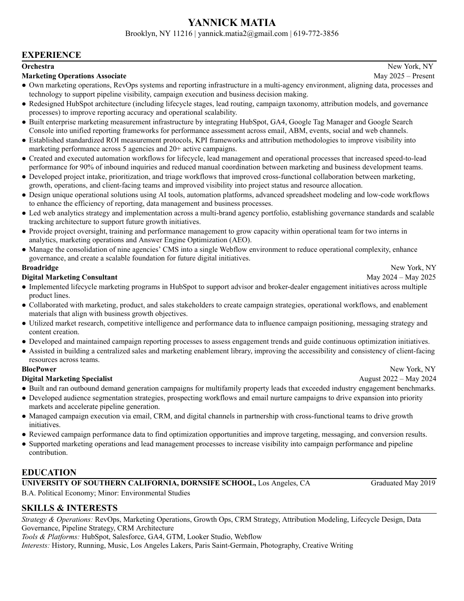

Experience on paper
One page.
The throughline.
A concise view of Yannick's experience across marketing operations, revenue operations, CRM architecture, automation, and analytics.

Brooklyn · updated 2026Experience on paper
A concise view of Yannick's experience across marketing operations, revenue operations, CRM architecture, automation, and analytics.

Brooklyn · updated 2026